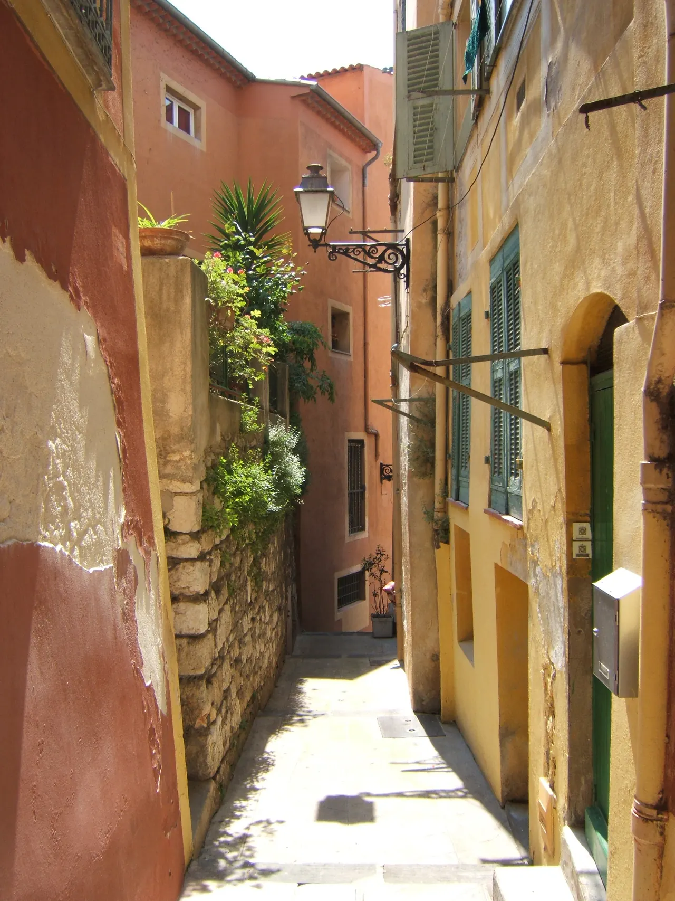

{kind=link}

Colline du Château (성채 언덕)
구시가지와 항구 사이에 92m 높이로 솟은 공원 전망대다.

| 항목 | 평가 |
|---|---|
| 여행 적합도 | ★★★★★ Jason·Julia의 생활형 여행에 최적화 |
| 예산 체감 | 중상 |
| 일정 강도 | 당일치기 2회 + 회복일 |
| 예약 핵심 | TER 기차 이동 유연 · NCE 렌터카 P0 |
| 우천 전환 | Nice 미술관 1곳 and 시장·카페 중심 |
| 니스는 화려함 뒤에 숨은 생생한 삶의 현장이 매력적인 지중해 생활도시이다. 이번 5박 일정은 명소 위주의 분주한 질주를 멈추고, 니스에 거점을 둔 채 칸(Cannes)과 모나코·망통(Monaco·Menton)을 기차로 다녀오는 최적의 방사형 여정을 제안한다. 특히 장기 여행 11일 차에 배치된 생활·회복일은 누적된 피로를 털어내고 프로방스 렌터카 이동을 준비하는 완벽한 완충 구간이다. |
구시가지와 항구 사이에 92m 높이로 솟은 공원 전망대다.

구시가지 진입로에 늘어선 니스의 대표 시장 광장이다.

지중해로 60m 솟아오른 거대한 바위 절벽 위에 조성된 모나코 대공국의 심장부다.

11세기 요새가 세워지며 칸의 역사가 시작된 언덕 마을이다.

칸(Cannes)의 1934년에 세워진 철골 지붕 재래시장이다.

추천 대상: 니스의 활기찬 아침 시장과 유서 깊은 구시가지 골목을 지나 성채 언덕의 지중해 파노라마 조망까지 한 번에 완료하고 싶은 여행자.

니스 제네랄 드골 광장에 서는 넓고 쾌적한 니스 현지인들의 생활형 시장이다.
항구 근처 해산물·생선 요리 저녁 식사 (대안: Le Bistrot du Port, La Belle Étoile / Special: Mirazur 사전예약 선택지)
향수 가게 한 곳 30–40분 상한, 워크숍(90분+) 금지
니스 체류는 43일간의 장기 유럽 여정 중 가장 긴 무이동 구간(5박 6일)이다. 짐을 매일 싸고 푸는 피로에서 완전히 벗어나 회복을 도모하는 핵심적인 회복 구간이자, 기차로 칸과 모나코·망통을 탐방하며 '생활도시(Nice) - 영화제 리조트(Cannes) - 소국(Monaco) - 파스텔톤 해안(Menton)'이라는 지중해의 다채로운 매력을 횡단하여 비교하는 풍성한 인트로 역할을 한다.
5박의 여정은 다음과 같이 자연스러운 파동을 그린다: - 전반부 (도착~Day 2): 니스에 정착하며 꽃시장(Cours Saleya), Vieux Nice 골목과 성채 언덕(Castle Hill)을 걷는다. - 중반부 (Day 3~Day 4): 니스-빌 역을 통해 기차로 칸과 모나코·망통을 각각 하루씩 산뜻하게 다녀온다. - 후반부 (Day 5~이동일): 화요일 리베라시옹 생활시장에서 장을 보고 휴식 및 세탁을 마친 뒤, 다음 날 아침 공항 렌터카를 인수해 생폴드방스와 그라스를 경유하며 엑상프로방스(Aix)로 향한다.